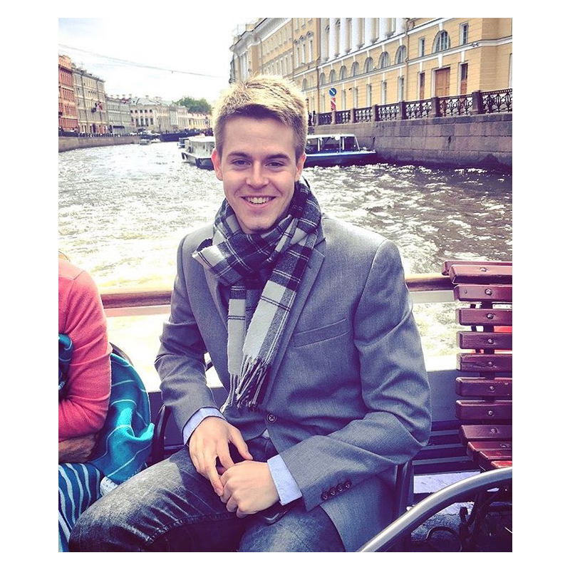

Otto Kienitz

PhD Student in Comparative Politics
University of California, Berkeley
Otto Kienitz is a PhD student in Comparative Politics at the University of California, Berkeley
His research interests include the historical comparative study of democracy, democratization, and democratic institutions in post-Communist Europe and Eurasia with a particular focus on Russian politics; as well as the development and manipulation of electoral systems; contemporary regime dynamics; and the historical legacies of imperial democratization and pre-democratic coalitions.
Prior to attending Berkeley, he received his B.A. (Phi Beta Kappa, Summa Cum Laude) in History with a Minor in Political Science from the University of Pennsylvania, and an M.A. in Russian and Eurasian Studies from the European University at St. Petersburg (Russia).
He enjoys music, soccer, and modernist art and literature, and comes from a family of musicians, educators, and writers.
His full CV is available here and can be reached via email.
There are things / we live among / and to see them / is to know ourselves.
George Oppen, Of Being Numerous (1968)

Russian land grant charter on 17th century vellum